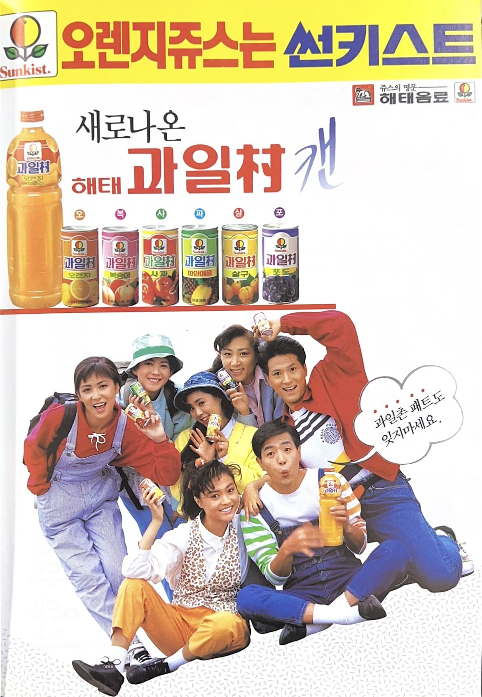

서울패밀리
새로나온 과일촌 캔.
과일촌 패트도 있지마세요.


새로나온 과일촌 캔.
과일촌 패트도 있지마세요.
서울패밀리는 1986년 데뷔한 대한민국의 대표적인 혼성 그룹으로, 김승미와 위일청을 중심으로 큰 인기를 얻었다. 감성적인 듀엣 보컬과 세련된 음악 스타일로 사랑받았으며, 대표곡 「이제는」은 지금까지도 많은 사람들에게 기억되는 명곡이다. 1980~1990년대 다양한 방송과 광고에 출연하며 대중적인 인지도를 쌓았다.
과일촌 캔은 해태음료가 출시한 과일 음료 제품으로, 과일의 신선한 맛과 향을 간편하게 즐길 수 있도록 개발되었다. 캔 제품과 페트병 제품을 함께 선보이며 소비자 선택의 폭을 넓혔고, 당시 음료 시장에서 젊고 밝은 이미지를 강조한 제품으로 알려졌다.
광고는 서울패밀리의 친근하고 밝은 이미지를 활용하여 제품의 상큼함과 대중성을 강조했다. 경쾌한 분위기와 쉬운 광고 문구를 통해 소비자들의 기억에 남았으며, 가족과 젊은 세대 모두가 즐길 수 있는 음료라는 이미지를 전달했다.
1990년대 초반 광고 시장은 가수와 연예인을 적극적으로 활용해 제품 이미지를 구축하던 시기였다. 특히 인기 음악 그룹이 출연한 광고는 높은 주목도를 얻었으며, 광고 음악과 모델의 이미지가 제품 인지도 향상에 큰 영향을 미쳤다. 서울패밀리 역시 당시 대중음악계의 인기를 바탕으로 광고 효과를 높였다.